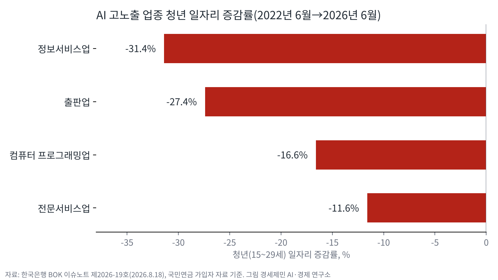
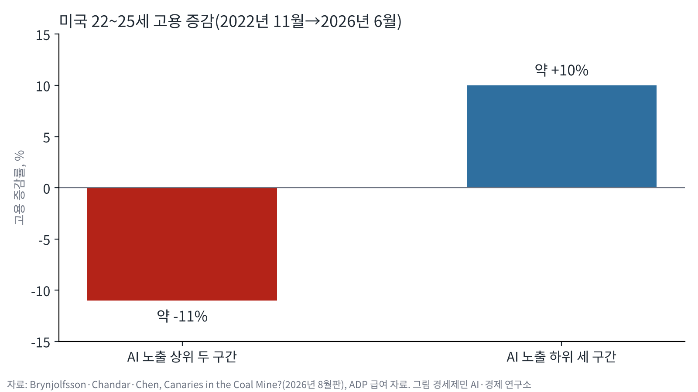

AI경제저널=김갑봉 기자 | 10월 청년층 취업자가 1년 전보다 19만6000명 줄었다. 국가데이터처가 11월 11일 발표한 「2026년 10월 고용동향」 수치다. 청년층 취업자가 1년 전보다 줄어든 흐름은 2022년 11월부터 48개월째 이어졌다.
한국은행은 AI 노출도가 높은 업종에서 청년 일자리가 크게 줄었다고 분석했다. 같은 업종에서 50대 고용은 늘었다.
미국 스탠퍼드대 연구진도 비슷한 분석을 내놨다. 연구진은 AI 노출 직업에서 22~25세 고용 격차가 19%까지 벌어졌다고 밝혔다.
정보서비스업 청년 일자리 31.4% 감소
오삼일 한국은행 고용연구팀장과 오영식 조사역은 8월 18일 이슈노트를 냈다. 두 사람은 2022년 6월부터 4년 동안 업종별 청년 일자리를 국민연금 가입자 자료로 따졌다.
청년 일자리는 정보서비스업에서 31.4%, 출판업에서 27.4% 줄었다. 컴퓨터 프로그래밍업은 16.6%, 전문서비스업은 11.6% 줄었다. 보고서는 이 업종들을 AI 노출도가 높은 업종으로 분류했다.

AI 고노출 업종 청년 일자리 증감률. 2022년 6월~2026년 6월(연구소 작성, 자료 한국은행 이슈노트 제2026-19호)
학력별로도 차이가 났다. 2022년 11월 이후 대졸 청년 실업률은 평균 7.0%였다. 전문대졸 이하 청년 실업률 5.4%보다 1.6%포인트 높았다. 보고서는 대졸 청년이 AI에 노출될 가능성이 상대적으로 높다고 봤다.
보고서는 청년 일자리가 두 갈래로 줄었다고 분석했다. 기업이 신규 채용을 줄였고, 이미 일하던 청년이 회사를 떠나는 일도 늘었다. AI 고노출 업종에서 일을 그만두고 실업자가 된 청년도 최근 늘었다.
경력직 선호와 핵심 연령층
보고서는 이를 「연공편향 기술변화」로 설명했다. 이 개념은 AI 노출도가 높은 산업에서 주니어 고용은 줄고 시니어 고용은 유지되거나 늘어나는 현상을 가리킨다. 보고서는 이 개념을 한진수·오삼일(2025)에서 인용했다.
한국은행 고용동향팀은 10월 26일 이슈노트에서 채용 흐름을 짚었다. 팬데믹 이전부터 기업이 요구하는 직무 역량은 전문화됐고, 채용도 숙련된 경력직을 찾는 쪽으로 바뀌어 왔다.
고용동향팀은 최근 AI 기술이 빠르게 퍼지면서 이 흐름이 더 강해졌다고 봤다. 특히 AI 노출도가 높은 직무에서 경력직 선호가 강해졌다고 분석했다. 고용동향팀은 청년이 주로 맡던 초급·기초 업무 수요가 빠르게 줄었다고 진단했다.
고용동향팀은 오삼일·오영식(2026)을 인용해 핵심 연령층은 AI를 보조 도구로 써 생산성을 높일 수 있다고 적었다. 고용동향팀은 그래서 이 연령층은 고용 충격이 작거나 고용이 늘었다고 설명했다.
고용동향팀은 AI 확산이 청년 일자리를 직접 대체하는 데 그치지 않을 수 있다고 봤다. 고용동향팀은 AI가 1차 노동시장에 새로 들어갈 기회 자체를 줄이는 길로도 고용에 영향을 줄 수 있다고 분석했다.
미국 22~25세 고용 격차 19%
에릭 브린욜프슨 스탠퍼드대 교수 연구진은 2026년 8월 논문 수정본을 냈다. 연구진은 미국 급여 대행사 ADP 급여 자료(2026년 6월까지)를 분석했다. 분석 표본은 달마다 노동자 350만~500만 명이다.
연구진은 경제 전체에서 일자리가 크게 사라진 증거는 없다고 밝혔다. 다만 AI 노출 직업에서 22~25세 고용은 덜 노출된 직업에서 같은 나이대와 같은 추세를 따랐을 때보다 19% 낮았다. 경력자에게는 이런 격차가 없었다.
실제 인원으로도 갈렸다. 2022년 11월부터 2026년 6월까지 AI 노출 상위 두 구간에서 22~25세 고용은 약 11% 줄었다. 노출 하위 세 구간에서 같은 나이대 고용은 약 10% 늘었다.

미국 22~25세 AI 노출 구간별 고용 증감. 2022년 11월~2026년 6월(연구소 작성, 자료 브린욜프슨 외 2026)
이 격차는 2025년 7월 자료로 잰 15%에서 2026년 6월 19%로 벌어졌다. 조정은 기본급보다 고용 인원에서 나타났다.
연구진은 다른 요인도 따져 봤다. 기술 기업과 컴퓨터 직종을 빼도, 금리 인상과 재택근무 영향을 통제해도 젊은 노동자 고용 격차는 크게 달라지지 않았다.
퇴사보다 채용에서 생긴 격차
연구진은 격차가 퇴사 증가에서 나오지 않았다고 분석했다. 2022년 이후 미국에서는 나이와 노출도를 가리지 않고 채용률과 퇴사율이 함께 떨어졌다. 연구진은 이를 「적게 뽑고 적게 내보내는」 노동시장이라고 불렀다.
젊은 노동자 퇴사율은 AI 노출이 큰 직업에서 적어도 덜 노출된 직업만큼 떨어졌다. 연구진은 일자리 대체라면 반대로 나타났어야 한다고 짚었다. 격차는 2022년 이후 벌어진 채용률 차이에서 나왔다.
한국은행 분석은 미국 연구와 달리 신규 채용 감소에 더해 재직 청년 유출 증가도 짚었다. 보고서는 이를 청년이 취업 뒤 고용관계를 이어 가며 경험과 숙련을 쌓는 과정이 약해졌을 가능성으로 해석했다.
자동화와 증강이 가른 차이
두 연구는 AI를 쓰는 방식에 따라 결과가 갈린다고 봤다. 한국은행 분석에서 AI가 사람 일을 대신하는 자동화 비중이 높은 업종일수록 청년 일자리가 많이 줄었다. 사람 일을 돕는 증강 비중이 높은 업종에서는 이런 흐름이 없었다.
스탠퍼드대 연구진은 앤트로픽이 공개한 AI 사용 자료로 직업별 자동화와 보완 비중을 따졌다. 자동화 비중이 높은 직업에서는 젊은 노동자 고용이 줄었고, 보완 비중이 높은 직업에서는 그대로이거나 늘었다.
연구진은 한계도 적었다. 학력을 통제하면 격차가 줄고, 생성형 AI 이전부터 갈라진 흐름도 일부 있다.
미국 공식 표본조사보다 ADP 자료에서 격차가 더 크게 나왔다. 연구진은 이 결과를 인과 추정이 아닌 초기 신호로 해석했다.
오삼일·오영식 보고서도 청년 고용 부진을 곧바로 AI 영향으로 보기 어렵다는 단서를 달았다. 보고서는 AI가 기존 채용·업무 방식 변화를 앞당긴 것으로 해석했다.
참고문헌
- 「2026년 10월 고용동향」, 국가데이터처, 2026년 11월 11일, https://mods.go.kr/board.es?mid=a10301030100&bid=210&act=view&list_no=447893
- 오삼일·오영식, 「청년고용 위축, AI탓인가? 변화하는 경력 사다리와 대응 과제」, BOK 이슈노트 제2026-19호, 한국은행, 2026년 8월 18일, https://www.bok.or.kr/portal/bbs/P0002353/view.do?nttId=11063845&menuNo=200433
- 황수빈·정강희·정성엽, 「청년고용 부진 및 정책 과제」, BOK 이슈노트 제2026-27호, 한국은행, 2026년 10월 26일, https://www.bok.or.kr/portal/bbs/P0002353/view.do?nttId=11065913&menuNo=200433
- Erik Brynjolfsson·Bharat Chandar·Ruyu Chen, "Canaries in the Coal Mine? Six Facts about the Recent Employment Effects of Artificial Intelligence", Stanford Digital Economy Lab, 2026년 8월, https://digitaleconomy.stanford.edu/app/uploads/2026/08/Canaries_August2026.pdf
[도표 출처]
- [도표 1] 경세제민 AI·경제 연구소 작성, 자료 한국은행 BOK 이슈노트 제2026-19호(2026년 8월 18일)
- [도표 2] 경세제민 AI·경제 연구소 작성, 자료 Brynjolfsson·Chandar·Chen(2026년 8월판)